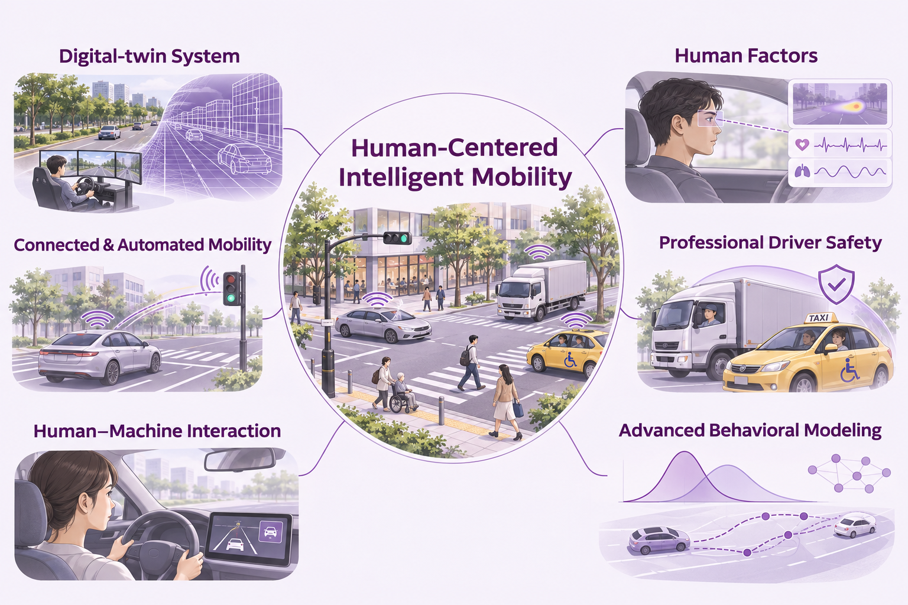
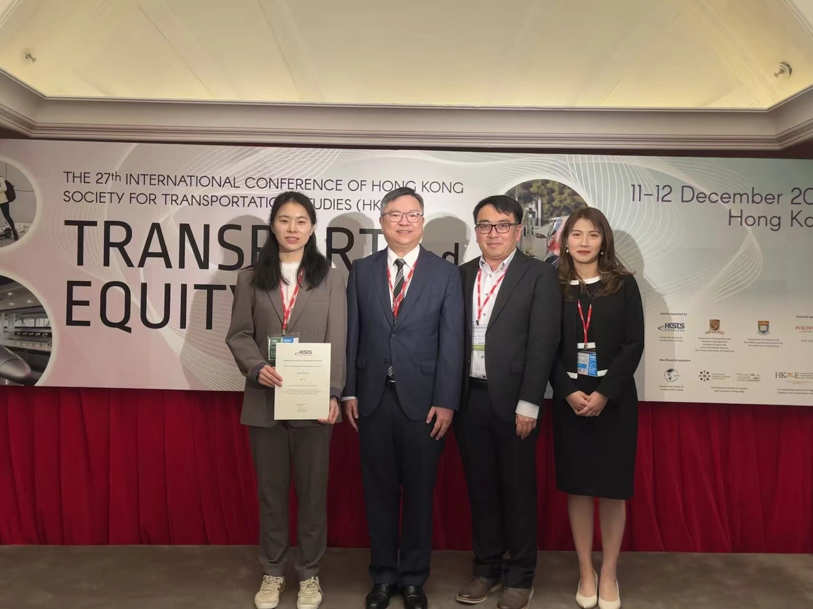
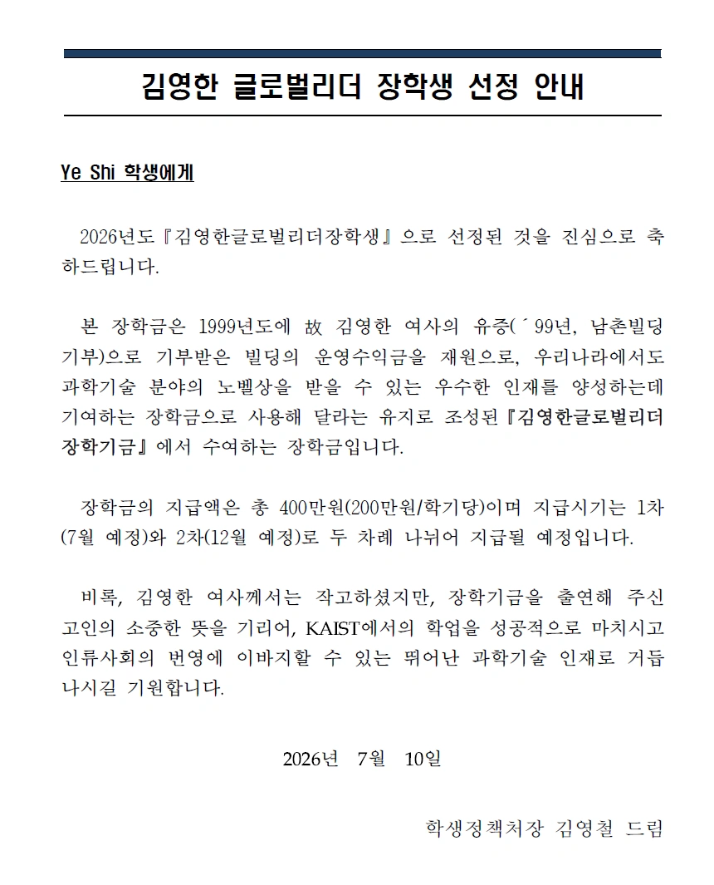
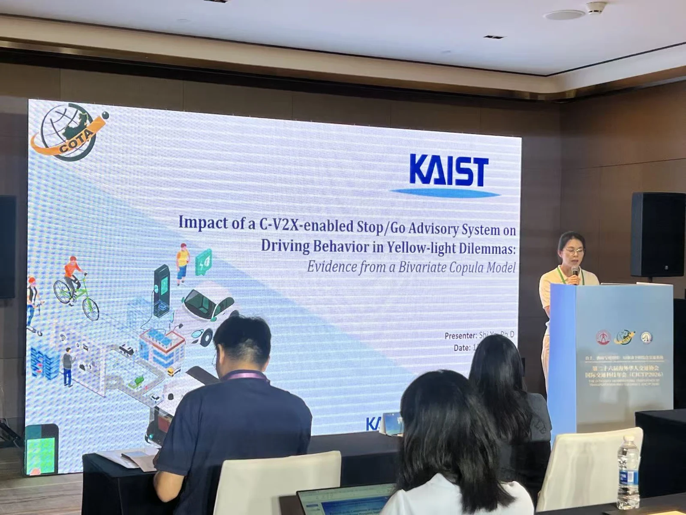
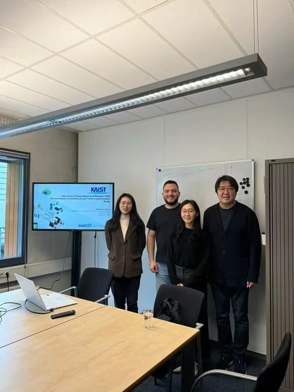

Driver Behavior · Human Factors · Mobility
Human-Centered
Intelligent Mobility.
I study how drivers respond to information, assistance systems, and work demands, with the aim of improving mobility safety.
My research combines driving simulation, human factors experiments, and behavioral modeling to understand driver decisions and evaluate assistance and training systems.
Research Areas
Human-Centered Intelligent Mobility
- Digital-Twin System
- Connected & Automated Mobility
- Human–Machine Interaction
- Human Factors
- Professional Driver Safety
- Advanced Behavioral Modeling

Education
Korea Advanced Institute of Science and Technology
Ph.D. in Transportation
Cho Chun Shik Graduate School of Mobility
Daejeon, South Korea
Central South University
M.S. in Transportation
School of Traffic and Transportation Engineering
Changsha, China
Zhejiang Normal University
Bachelor’s Degree in Transportation Engineering
College of Engineering
Jinhua, China
Research Experience
Ph.D. Researcher · KAIST
Human-FACTS Lab
Advisor: Prof. Tiantian Chen
Research Assistant · PolyU
Department of Industrial and Systems Engineering
Advisor: Prof. Xiaowen Fu
Visiting Student · NUS
Department of Civil and Environmental Engineering
Host: Prof. Yang Liu
Participation in research-group meetings and academic exchange.
Recognition
Honors & Awards
Best Research Award
KAIST Cho Chun Shik Graduate School of Mobility
Best Lightning Talk Award
26th COTA International Conference of Transportation Professionals
Official announcement ↗First Prize · Outstanding Student Paper Award
27th HKSTS International Conference
Official announcement ↗Outstanding Graduate Award
Zhejiang Normal University
Provincial Outstanding Student Scholarship
Zhejiang Province


Sharing Research
Presentations & Academic Visits


2026 · CICTP, Jinan
Impact of C-V2X-Enabled Stop/Go Advisory System on Driving Behavior in Yellow-Light Dilemmas: Evidence from a Bivariate Copula Model · Lightning Talk
2025 · ITS Asia-Pacific Forum, Suwon
Compassion in Motion: Cultivating Empathy Among Taxi Drivers – A Travel Equity Initiative
2024 · Invited Seminar, TU Delft
How Do the Drivers React to Different C-V2X Environments in Dilemma Zones? A Driving Simulator Study
2023 · HKSTS, Hong Kong
Investigating Work-Related Distraction’s Impact on Taxi Driver Safety: A Hazard-Based Duration Model
2023 · KST Conference, Busan
Hazard-Based Duration Model to Quantify the Impact of Work-Related Distraction on Taxi Drivers’ Conflict Risk: A Driving Simulator Study
Academic Community
Service
Peer Review
- Accident Analysis & Prevention
- Transport Policy
- Travel Behaviour and Society
- Transportation Research Part F
- Case Studies on Transport Policy
Conference & Laboratory Service
HKSTS 2024
Supported conference operations as a student helper.
Human-FACTS Lab
Assisted with visiting-faculty reception and research-facility tours.
Get in Touch